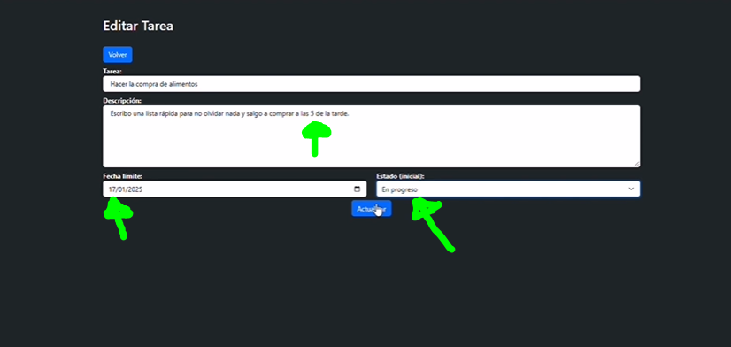
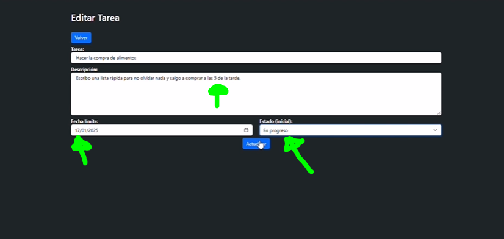

Lista de Tareas (To-Do List) en Laravel
 

Esta aplicación de lista de tareas está desarrollada con Laravel, proporcionando funcionalidades CRUD para gestionar tareas: Crear, Leer, Actualizar y Eliminar.
Características Principales
Paginación para facilitar la visualización de tareas.
Búsqueda avanzada por título o descripción.
Interfaz sencilla para agregar, editar y eliminar tareas.
Tecnologías Utilizadas
Backend: Laravel, MySQL
Frontend: Blade Templates, HTML5, CSS3, Bootstrap
Pasos para Instalar
Instalar Dependencias: Ejecuta
composer install
Configurar .env: entra al archivo .env y
configura la conexión a la base de datos.
Migrar Base de Datos: Usa
php artisan migrate para crear las tablas necesarias.
Iniciar Servidor: Levanta el servidor con
php artisan serve.
Potencial y Usos
Este sistema puede ser utilizado para una amplia variedad de proyectos, desde la gestión personal de tareas hasta la colaboración en equipo, escalando hacia aplicaciones empresariales más complejas.
Ventajas
Optimización del tiempo: Permite a los usuarios organizar y priorizar tareas de manera eficiente, asegurando que nada importante quede sin atender.
Colaboración mejorada: En un entorno empresarial, el sistema puede usarse para asignar tareas específicas a diferentes miembros del equipo, promoviendo una mejor distribución del trabajo.
Seguimiento de progreso: Ofrece una vista clara del estado de las tareas (completadas, en proceso, pendientes), ideal para gestionar proyectos personales o laborales.
Facilidad de uso: Diseño intuitivo que permite a cualquier usuario, sin importar su nivel técnico, interactuar con el sistema sin problemas.
Adaptabilidad: Desde gestionar listas de compras hasta planificar proyectos complejos, el sistema se adapta a diferentes necesidades y contextos.
Centralización de información: Almacena todas las tareas en un solo lugar, eliminando la necesidad de múltiples herramientas o notas dispersas.